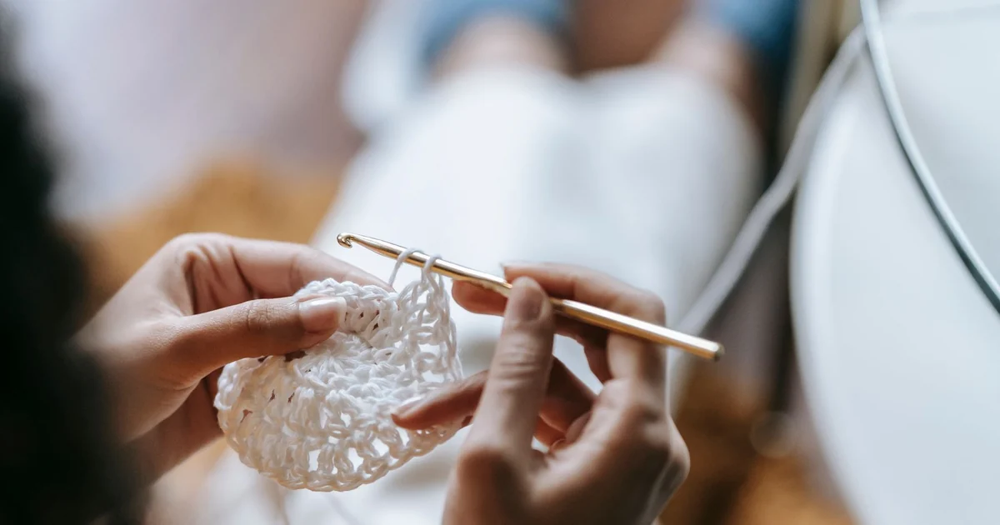
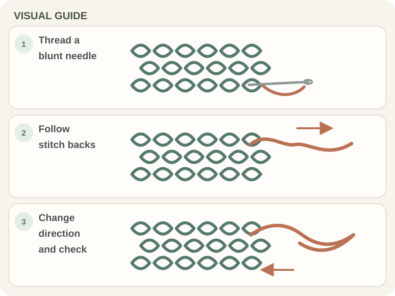

Stitches & Techniques · Beginner guide
How to Weave in Yarn Ends Neatly
Weave a yarn tail through several stitches on the wrong side, change direction, and leave the fabric relaxed.

A secure finish spreads the tail through the fabric instead of relying on one knot. The path should hold without showing on the right side or puckering the stitches.
Before you begin
Use a blunt tapestry needle that can pass through the yarn and fabric. Keep the tail long enough to thread and weave; wait to trim until you have checked the finish.
Step-by-step instructions
- Thread the tail through the eye of a blunt tapestry needle.

Real crochet photograph by Miriam Alonso via Pexels. - On the wrong side, follow the path of nearby stitches for several stitches.
- Change direction through a different set of stitches without pulling the fabric tight.
- Gently stretch the fabric, check that the tail stays hidden, then trim close without cutting a stitch.

How to check your work
The tail should not pull free with a gentle tug, and the right side should look unchanged. Stretch the fabric as it will be used to check for puckering or a tail showing through.
Common beginner problems
- The tail shows on the right side: Undo the last section and weave through the back bars or underside of stitches.
- The fabric puckers: Loosen the woven path; the tail should lie within the fabric, not cinch it.
- The end unravels after washing: Weave through more stitches and change direction, then follow the yarn’s care instructions.
Avoiding a bulky finish
Match the finishing method to the project: a stretchy garment needs a path that can stretch, while a sturdy home item may tolerate a firmer weave. Do not cut the tail until you have tested the fabric gently.
Frequently asked questions
Should I tie a knot first?
Usually a knot can make a hard bump. Follow the pattern’s finishing advice and weave the tail securely.
Do I weave in the end before or after blocking?
Either may be appropriate; follow the pattern. Leave a little room if the fabric will stretch or be blocked.
What is the wrong side?
It is the side intended to face inward or away from view; patterns may mark it WS.